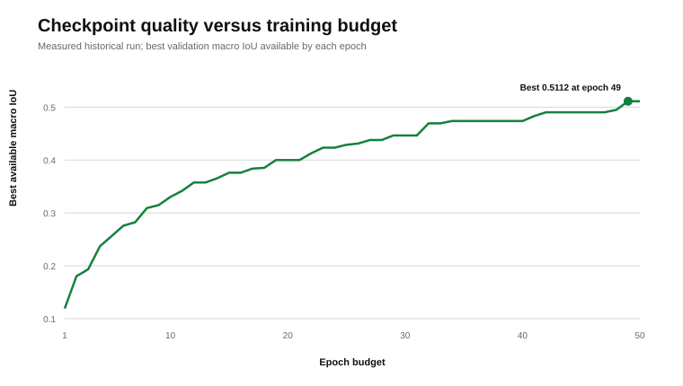
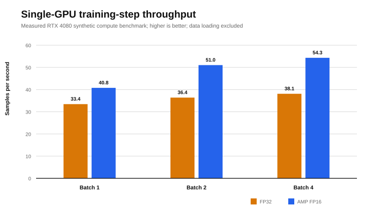
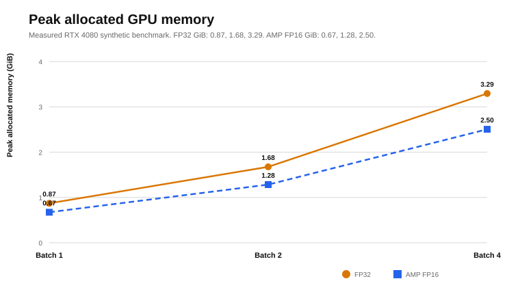
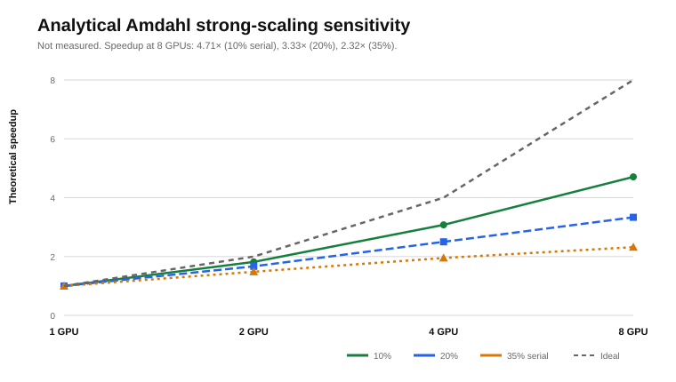

Abstract
Distributed training is often presented as a GPU-count problem, although geospatial workloads frequently stall in decoding, temporal sampling, host-to-device transfer, validation stitching or collective communication. This note separates three evidence layers for a 1,947,456-parameter multimodal crop model: a historical 50-epoch experiment measured on one RTX 4080, a new compute-only training-step benchmark on the same GPU class, and analytical DistributedDataParallel (DDP) scaling scenarios. AMP FP16 produced measured compute throughput of 40.8 samples/s at batch 1 and 54.3 samples/s at batch 4, compared with 33.4 and 38.1 samples/s in FP32. The historical train-plus-validation epoch median was 161.76 s; this timing includes real geospatial reads, tiled validation and metric aggregation but excludes post-epoch checkpointing and tracking. No multi-GPU hardware was available; consequently, the DDP curves are mathematical scenarios, not empirical speedups.
1. Evidence before speedup
A useful scaling study starts by labelling evidence, not by drawing an ideal line through unmeasured GPU counts. This article uses three categories:
- Measured run
- A completed 50-epoch training and validation run on an RTX 4080 with pinned source, data revision and W&B history.
- Measured microbenchmark
- Synthetic tensors resident on the RTX 4080, exercising the full model, weighted loss, backward pass, gradient clipping and AdamW update.
- Analytical scenario
- Amdahl and ring all-reduce equations used to define expectations and failure conditions. These are not measured DDP results.
The available system contains one RTX 4080. Claims about two, four or eight GPUs are therefore limited to equations and pre-registered measurement requirements. The historical profile-level claim of 3.9 times throughput is not used because its raw benchmark artefacts are unavailable.
2. Workload and tensor pressure
The workload is the Sentinel-first crop-intelligence model from research note 001. One training sample contains 16 Sentinel-2 observations with 10 bands, two four-date Sentinel-1 orbit sequences with VV and VH, 10 m semantic and parcel targets, and a three-channel SPOT target on a 320×320 high grid.
| Component | Tensor or configuration |
|---|---|
| Sentinel-2 | [B,16,10,32,32] |
| Sentinel-1 ascending / descending | Two tensors of [B,4,2,32,32] |
| High-grid RGB target | [B,3,320,320] |
| Model | 1,947,456 parameters; temporal Transformer, FPN and ×10 detail decoder |
| Optimisation | AdamW; gradient norm clipped to 1.0; FP32 or AMP FP16 |
High-grid activations, not parameter storage, dominate this compact model. FP32 parameters alone require approximately 7.43 MiB. AdamW parameter, gradient and optimiser-state storage is still small relative to feature maps, high-grid logits and loss intermediates.
Two timing scopes
The historical epoch timer includes training, complete validation, SPOT reads, tiled inference and metric aggregation. It excludes checkpoint writing and post-epoch W&B logging. The new microbenchmark excludes all data loading and validation. It measures a complete optimisation step with inputs and targets already on the GPU. These scopes answer different questions:
- The end-to-end run asks how long the scientific experiment took.
- The microbenchmark asks how efficiently one GPU executes the model and loss at each batch and precision.
3. Measured single-GPU benchmarks
Historical training experiment
| Hardware | NVIDIA GeForce RTX 4080, 16 GB |
|---|---|
| Software | PyTorch 2.6.0+cu124; CUDA 12.4; cuDNN 9.1 |
| Data | 1,455 training patches; 482 validation patches |
| Protocol | Batch 1; AMP FP16; 50 epochs; four workers |
| Median epoch | 161.76 s |
| Timed train and validation | 2.250 h |
| End-to-end W&B runtime | 2.261 h |
| Epoch-50 PyTorch peak since reset | 0.826 GiB allocated; 1.529 GiB reserved |

Compute-only benchmark
Each configuration used 10 warm-up steps and 30 measured steps. CUDA was synchronised after every step. Throughput is computed from median step latency. Synthetic tensors remove storage variance but do not represent end-to-end data throughput.
| Precision | Batch | Median step | p95 step | Samples/s | Peak GiB |
|---|---|---|---|---|---|
| FP32 | 1 | 29.91 ms | 30.43 ms | 33.4 | 0.87 |
| FP32 | 2 | 54.97 ms | 55.38 ms | 36.4 | 1.68 |
| FP32 | 4 | 105.00 ms | 105.44 ms | 38.1 | 3.29 |
| AMP FP16 | 1 | 24.52 ms | 25.49 ms | 40.8 | 0.67 |
| AMP FP16 | 2 | 39.20 ms | 39.82 ms | 51.0 | 1.28 |
| AMP FP16 | 4 | 73.65 ms | 74.94 ms | 54.3 | 2.50 |


Interpretation
The microbenchmark suggests that the GPU compute path benefits from AMP and modest batching. It does not show that the complete experiment would improve by the same ratios. The historical epoch contains validation, overlap-weighted tiled inference, metrics and data-storage work that the microbenchmark intentionally excludes. A profiler must determine how much wall time each component occupies before any optimisation is credited with end-to-end speedup.
4. What DDP can and cannot scale
For a fixed workload, define throughput QN, speedup SN and parallel efficiency EN for N GPUs:
SN = T1 / TN, EN = SN / N
Near-linear speedup requires enough independent compute to hide gradient synchronisation and enough host throughput to feed every rank. A useful step-time decomposition is:
Amdahl sensitivity
If fraction s of execution is serial or otherwise non-scaling, the upper bound is:
| GPUs | 10% serial | 20% serial | 35% serial |
|---|---|---|---|
| 2 | 1.82× / 90.9% | 1.67× / 83.3% | 1.48× / 74.1% |
| 4 | 3.08× / 76.9% | 2.50× / 62.5% | 1.95× / 48.8% |
| 8 | 4.71× / 58.8% | 3.33× / 41.7% | 2.32× / 29.0% |
Each cell reports speedup and efficiency. The 20% scenario reaches only 3.33× on eight GPUs. This is a mathematical sensitivity analysis, not a prediction that the workload has a 20% serial fraction.

Ring all-reduce traffic
For P parameters, b bytes per communicated gradient and N ranks, let M = Pb be the gradient payload. Ring all-reduce sends approximately the following bytes per rank and receives the same amount:
With 1,947,456 parameters and FP32 gradient communication, the raw gradient payload is 7.43 MiB. Each rank sends approximately 7.43 MiB with two ranks, 11.14 MiB with four and 13.00 MiB with eight, and receives the same volume. These are send volumes, not send-plus-receive totals. Latency, bucket scheduling, topology and overlap usually matter more than this small payload alone:
Here α is per-phase latency, M is gradient payload and Beff is effective link bandwidth. Small models with short backward passes can expose collective latency because there is less computation available to overlap it.
Batch semantics are part of the experiment
The historical run uses global batch 1. A fixed-global-batch strong-scaling comparison cannot distribute one sample across multiple ordinary DDP ranks. Holding local batch 1 while increasing GPU count changes global batch to N, reduces optimiser updates per epoch and changes the optimisation problem. A fair scaling study must therefore compare:
- Equal global batch, where feasible, using matched gradient accumulation.
- Equal local batch as a weak-scaling throughput experiment, with model quality re-evaluated.
- Equal optimiser-update count when the global batch changes.
5. Geospatial systems bottlenecks
Input pipeline
Remote-sensing training can combine NPY reads, GeoTIFF decoding, temporal sampling, validity masks and spatially coupled augmentation. Adding ranks multiplies demand on storage and CPU workers. If input production is slower than GPU consumption, DDP duplicates starvation rather than compute.
Measure queue wait, decode time, augmentation time, pinned-memory transfer and GPU idle gaps separately. Tune persistent workers, prefetch depth, pinned memory, non-blocking copies and local caching only after the profiler identifies the dominant term.
Validation and tiled inference
Tiled validation performs overlapping inference, logit blending, metric accumulation and high-grid diagnostics. Training throughput alone can therefore overstate end-to-end improvement. Validation must either be distributed with mathematically equivalent aggregation or timed as a separate fixed component.
Numerical correctness
AMP is a numerical intervention. Throughput is insufficient evidence unless validation metrics, overflow behaviour and gradient stability remain acceptable. At minimum, record loss-scale changes, non-finite batches, gradient norms and task metrics under FP32 and mixed precision. BF16 should be benchmarked independently on hardware with native support.
Profiler questions
- Does the host leave gaps between kernels?
- Does all-reduce overlap the backward pass or form a terminal communication tail?
- Are small kernels and launch overhead dominant?
- Does validation or checkpoint I/O dominate epoch time?
- Does increasing batch improve arithmetic intensity without changing model quality?
6. Protocol for a publishable DDP benchmark
A future multi-GPU result should use the same source commit, dataset revision, split, precision policy and validation code on every configuration. The following protocol is pre-registered here:
- Benchmark 1, 2, 4 and 8 GPUs with topology recorded by
nvidia-smi topo -m. - Run at least five warm epochs followed by five measured epochs per configuration.
- Repeat each configuration at least three times with controlled seeds.
- Report training-only, validation-only and end-to-end epoch time separately.
- Report median, p95 and dispersion for step latency and samples/s.
- Record GPU utilisation, power, peak memory, data-loader wait and NCCL collective time.
- Compare equal-global-batch and equal-local-batch protocols explicitly.
- Test model-quality equivalence rather than assuming that throughput preserves optimisation.
The analytical scenarios and the pre-registered protocol above now have an implementation home: neuralq-distributed, NeuralQ’s access-controlled distributed-training and GPU data-plane framework. It implements DDP, FSDP2, ZeRO stages 1–3, and tensor and pipeline parallelism composed on a validated dp×tp×pp device mesh, with a RAPIDS data plane (cuDF/Dask-CUDA, DALI, GPUDirect Storage) and three interchangeable Kubernetes backends (Kubeflow, KubeRay, JobSet). Its doctrine matches this note’s discipline: topology is schema-validated before any pod is scheduled, a fabric benchmark CLI measures all-reduce bus bandwidth rather than assuming it, and acceptance requires distributed-versus-single-device loss parity within a documented numerical envelope. The framework’s workload mapping assigns this note’s ~1.95 M-parameter crop model to plain DDP, with investment directed at the GPU-resident input pipeline — consistent with the bottleneck analysis in section 5. The multi-GPU numbers this note declined to fabricate remain unmeasured until that framework’s benchmark harness produces them under this protocol.
Energy and cost
Runtime alone does not determine efficiency. If power samples P(t) and cloud prices are available:
Crun = ThoursChour
Report system-boundary assumptions. GPU board power does not include CPUs, storage, networking or cooling, and list price is not equivalent to realised cloud cost.
7. Limitations
- The historical run and new microbenchmark use one RTX 4080; no empirical DDP scaling is reported.
- The microbenchmark uses synthetic resident tensors and excludes geospatial I/O, augmentation and validation.
- Only 30 timed steps are measured per microbenchmark configuration.
- FP32 and AMP are compared for performance and memory, not task-metric equivalence.
- The historical run and microbenchmark were executed at different times and are not a timing decomposition of one execution.
- Amdahl scenarios omit topology-specific NCCL behaviour, stragglers, contention and failure recovery.
Reproducibility statement
The article includes the compact historical evidence, raw microbenchmark output, benchmark harness and dependency-free chart generator. The historical evidence is bound to training commit 4ecb848d3e8200cf3c8dbd7795b09193fae44d53, dataset revision bd796b56304f57628966f9552afc286ad47f2133 and W&B run team-khlaifiabilel/neuralq-crop-foundation/04tbj3je. The new microbenchmark imports the clean v2.1.0 source commit 2b34ef4b60744c11e495324e89882402d8d5d6f6. Its JSON records the benchmark-script SHA-256, invocation, hostname, GPU index, driver, power limit and persistence mode.
PYTHONPATH=/path/to/v2.1.0 python benchmark_single_gpu.py --output single_gpu_benchmark.json --warmup 10 --iterations 30 --batch-sizes 1 2 4